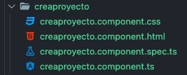
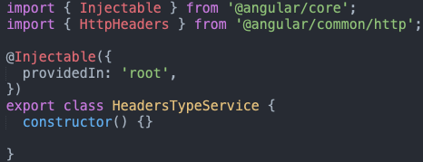

Comando en terminal (CMD)
ng generate component nombrecomponente (nombre del componente), ng g c nombrecomponente
Un componente, debe de tener al momento de crearce 3 archivos que vienen dentro de una carptea con el nombre que se creo, y los 3 archivos son, un archivo .ts, un .html y alguna hoja de estilo.
Aqui vamos a colocar los estilo exclusivos del componente, ningun otro componenete podra modificarse con esta hoja de estilo.
Aqui vamos a colocar el lenguaje de marcado (tag), con el cual le daremos una estructura a nuestro componente.
El archivo TS es aquel que nos va ayudar a darle funcionalidad a nuestro componente, aqui podemos colocar la conexion a un servicio que vamos describir mas adelante, tambien vamos a colocar variables y metodo (funciones en JavaScript) con las cuales al momento de dar clic al boton o rellenar el formularion podremos realizar una accion y darle al usuario una respuesta a dicha accion.
@Component es una anotacion que debe de llevar el archivo .ts ya que internamente angular lo podra tomar como tal un componente, con el cual le vamos a dar la funcionalidad del componente en un lenguaje de TypeScript.
Es una directiva con la cual vamos a poder colocar mediante un tag y el nombre del selector ejemplo "< app-componente-servicios />" y este componente se podra visualizar en cualquier parte del proyecto.
aqui se colocar la ruta del archivo html del component y colocar el lenguaje de marcado.
colocar al ruta de la hoja de estilo, esta puede ser css, scss, sass.
se colca export class nombredelcomponente con esto quiero decir quiero que exportar mi clase para que cualquier componente pueda ocuparlo
esta anotacion es importante ya que aqui se configura los componente, dependencias, servicios.
Aqui se declaran los componente para que el archivo de configuracion puede ocupar el componente en cualquier otro componente del proyecto.
Aqui se debe colocar los servicios, clases que necesitamos ocupar dentro del proyecto.
Aqui se colocar el componente que se desea iniciar
Comando en terminal (CMD)
ng generate service nombrecomponente (nombre del componente), ng g s nombrecomponente
Esta anotacion es para definir que es un servicio, dentro de la estructura de angular.
En este servicio vamos a realizar la conexion a la back-end y conectar hacia el componente